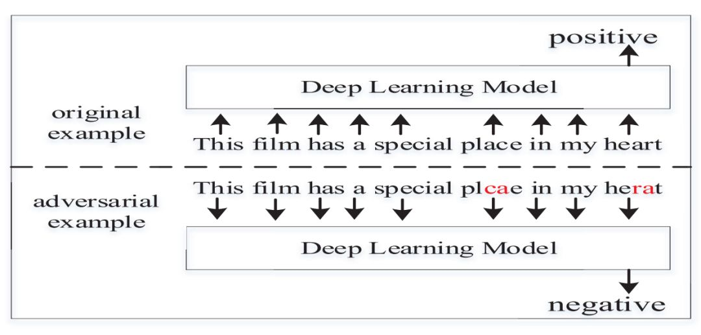
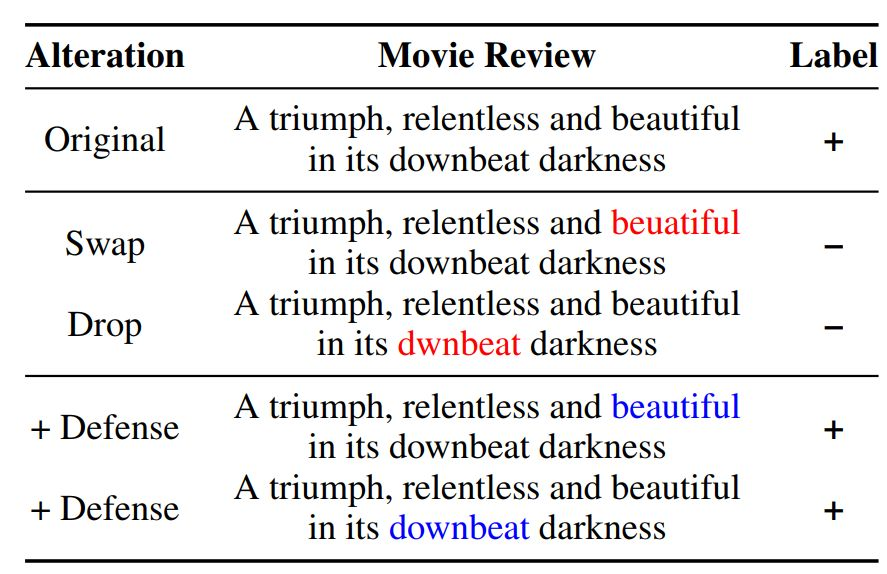

NLP中如何发掘模型的可解释性
可解释性在AI的模型设计中十分重要。需要防止模型存在偏见和缺陷带来的伦理问题，并且帮助决策者理解如何正确地使用我们的模型。越是严苛的场景，越需要模型提供证明它们是如何运作且避免错误的证据。如实时性较强的无人驾驶领域，黑盒模型无法让人们信服其工作的安全性。
通常深度学习模型就像一个黑匣子，它能预测出很好的结果，但是你并不知道它为什么会预测出这样的结果。想知道它是如何工作的，那么得尝试打开这个黑匣子，解释模型的意义十分必要。
现有方法：
通用性思路：
建模前：选用可解释性模型，如：决策树模型、线性回归、逻辑回归、广义线性回归、广义加性模型、贝叶斯实例模型等
建模后：使用可解释性方法，主要是针对具有黑箱性质的深度学习模型而言的，主要分为以下几类的工作：隐层分析方法、 模拟/代理模型、敏感性分析方法
不确定性估计方法
对于NLP，BERT模型的可视化
面向可解释的NLP：北大、哈工大等提出文本分类的生成性解释框架
在Seq2Seq和注意力机制中如何可视化模型细节
对抗样本能否运用到自然语言处理模型中
自然语言处理方面的研究在近几年取得了惊人的进步，深度神经网络模型已经取代了许多传统的方法。但是，当前提出的许多自然语言处理模型并不能够反映文本的多样特征。因此，许多研究者认为应该开辟新的研究方法，特别是利用近几年较为流行的对抗样本生成和防御的相关研究方法。
使用对抗样本生成和防御的自然语言处理研究可以基本概括为以下三种：1. 用未察觉的扰动迷惑模型，并评价模型在这种情况下的表现；2. 有意的改变深度神经网络的输出；3. 检测深度神经网络是否过于敏感或过于稳定，并寻找防御攻击的方法。
Jia 和 Liang 首先考虑在深度神经网络中采用对抗样本生成（或者「对抗攻击」，两者皆可）方法完成文本处理相关任务。他们的研究在自然语言处理社区很快获得了研究方面的关注。
然而，由于图片和文本数据内在的不同，用于图像的对抗攻击方法无法直接应用与文本数据上。首先，图像数据（例如像素值）是连续的，但文本数据是离散的。其次，仅仅对像素值进行微小的改变就可以造成图像数据的扰动，而且这种扰动是很难被人眼差距的。但是对于文本的对抗攻击中，小的扰动很容易被察觉，但人类同样能「猜出」本来表达的意义。因此 NLP 模型需要对可辨识的特征鲁棒，而不像视觉只需要对「不太重要」的特征鲁棒。

DeepWordBug 的深度网络攻击示例。选自 arXiv：1902.07285
与图像领域一样，有进攻就会有防御，目前也有很多研究尝试构建更鲁棒的自然语言处理模型。例如在 CMU 的一篇对抗性拼写错误论文（arXiv：1905.11268）中，研究者通过移除、添加或调序单词内部的字符，以构建更稳健的文本分类模型。这些增减或调序都是一种扰动，就像人类也很可能出现这些笔误一样。通过这些扰动，模型能学会如何处理错别字，从而不至于对分类结果产生影响

对抗性拼写错误导致的情感误分类，与通过字识别防御手段获得的更稳健模型。选自 arXiv：1905.11268